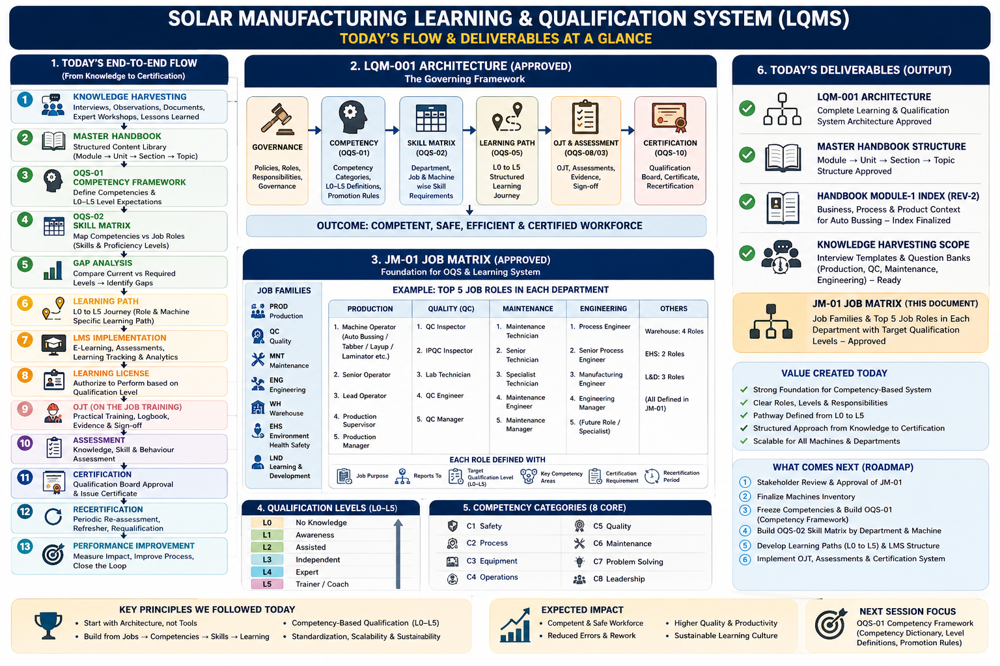
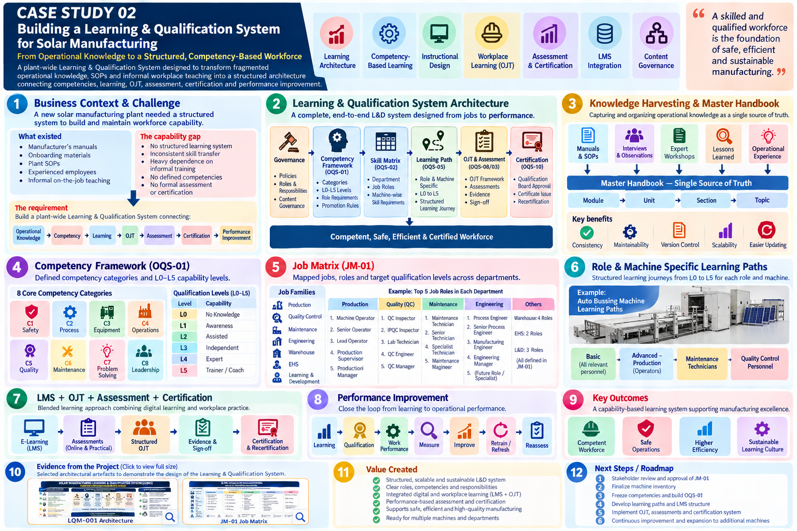

Building a Learning & Qualification System for Solar Manufacturing
From operational knowledge to a structured, competency-based workforce — a plant-wide Learning & Qualification System designed to connect competencies, learning, workplace practice, assessment, certification and performance improvement.
Business Context
The solar manufacturing plant was a newly established manufacturing operation. Initial onboarding support was provided through existing manuals, training guides and onboarding sessions, while the plant developed its own SOPs.
The requirement was therefore larger than preparing training material: build a plant-wide Learning & Qualification System connecting operational knowledge, competency, learning, OJT, assessment, certification and performance improvement.
The Design Challenge
The system needed to serve multiple operational functions while remaining scalable.
Core operational departments
Production · Quality Control · Maintenance
Broader architecture
Engineering · Warehouse · EHS · Learning & Development
The architecture needed to answer: What does each role need to know? What must each employee be able to do? What competency level is required? Which learning should come first? What can be learned digitally? What must be demonstrated on the job? How should competence be assessed? When is an employee qualified and when should qualification be renewed?
My Approach
I designed the system around a simple principle:
The architecture was deliberately designed as a system, rather than as a collection of independent training courses.
Knowledge Harvesting
A new plant contains knowledge in many forms: manuals, SOPs, onboarding material, expert knowledge, observations, interviews, workshops, lessons learned and operational experience.
Knowledge harvesting was therefore designed as the starting point rather than immediately beginning with course creation.
Master Handbook — Single Source of Truth
Rather than independently developing multiple versions of similar content for different departments, the architecture established a master content repository from which role-specific learning could subsequently be extracted.
Consistency
Common source content across learning outputs.
Maintainability
Changes can be managed centrally.
Version control
Controlled content hierarchy reduces uncontrolled duplication.
Scalability
Role-specific learning can be derived from one controlled base.
Competency Framework
OQS-01 defined competency categories, L0–L5 expectations, promotion rules and role requirements. The progression moves from awareness to independent performance and eventually coaching others.
Competency Categories
The architecture identified eight core competency categories so that capability was considered more broadly than technical knowledge alone.
Job Matrix
JM-01 became the bridge between organizational roles and the learning system. It mapped job families and roles across Production, Quality, Maintenance, Engineering, Warehouse, EHS and L&D.
| Job family | Example progression | Role definition includes |
|---|---|---|
| Production | Machine Operator → Senior Operator → Lead Operator → Supervisor → Manager | Purpose, target qualification level, competencies, certification and recertification. |
| Quality | QC Inspector → IPQC Inspector → Lab Technician → QC Engineer → Manager | Role-specific capability and qualification requirements. |
| Maintenance | Technician → Senior Technician → Specialist → Engineer → Manager | Technical competency and qualification progression. |
| Engineering | Process Engineer → Senior Process Engineer → Manufacturing Engineer → Manager | Capability, certification and progression requirements. |
Gap Analysis
The system introduced a formal capability-gap stage:
This is the point at which L&D becomes directly connected to workforce capability.
Learning Paths
Job requirements were translated into structured learning paths using the L0–L5 qualification journey. The design was role- and machine-specific rather than giving every employee the same generic training.
LMS Integration
The architecture incorporated e-learning, assessments, learning tracking and analytics. The LMS was not treated merely as a place to upload PDFs; it became part of the qualification architecture.
The LMS supports the learning system; it does not define the learning system.
OJT as a Structured Learning Experience
Because manufacturing competence cannot be established entirely through digital learning, the system deliberately combined LMS learning with On-the-Job Training.
Structured OJT
Practical training aligned to defined learning requirements.
Evidence & Sign-off
OJT evidence, logbook and sign-off support qualification.
Assessment & Qualification
Assessment was connected directly to qualification rather than being treated as a separate academic event.
Qualification was based on knowledge + skill + behaviour / performance evidence, followed by qualification-board approval and certification.
Certification & Recertification
Certification
Formal qualification approval and issue of certification.
Recertification
Periodic re-assessment, refresher learning and requalification.
Capability was therefore treated as something to be maintained, not permanently achieved after one training event.
Performance Improvement
The architecture therefore connects learning with operational performance rather than treating training as an isolated HR activity.
Machine-Specific Learning Architecture
A particularly strong component was the creation of a Master Training Module for the Auto Bussing Machine. The master module acted as the common content foundation from which role-specific learning could be structured.
Basic
All relevant personnel.
Advanced — Production
Production operators.
Maintenance
Maintenance technicians.
Quality Control
QC personnel.
One controlled knowledge base → multiple role-specific learning journeys.
Example: Progressive Machine Capability
For Production, the architecture progressed from basic machine knowledge toward increasingly complex responsibilities.
| Stage | Capability focus |
|---|---|
| Basic | Machine overview, safety, components, operating parameters, startup, production, quality, troubleshooting and shutdown. |
| Advanced — Level 1 | HMI, recipe management, air-system checks, ribbon installation and machine modes. |
| Advanced — Level 2 | Defect analysis, vision-system operation, changeover optimization and data logging/reporting. |
| Advanced — Level 3 | Process-window / recipe creation, protection parameters, servo-axis knowledge and trainer competency. |
A similar progressive structure was created for Maintenance and Quality. This is an example of progressive capability design.
Content Production
The system required considerably more than writing learner manuals.
Learner Content
Learning modules, structured handbook content and LMS material.
Trainer Enablement
Trainer manuals, OJT guidance and assessment guidance.
Workplace Content
SOP-linked learning, OJT instructions, checklists and logbooks.
Multimedia & Governance
Instructional photographs, OJT videos, machine demonstrations, document numbering, hierarchy and version management.
Content Governance
The architecture established a repeatable content workflow in which the Master Module acts as the single source of truth.
Department heads review and classify content according to role and capability level, after which L&D extracts the relevant modules for deployment. This creates a repeatable content-production model rather than developing every course independently.
Architecture-Level Evidence
Because detailed company training records, assessments and operational documents are confidential, this portfolio presents selected evidence at an architectural level. The artifacts below demonstrate the design of the Learning & Qualification System without disclosing proprietary company documents.

